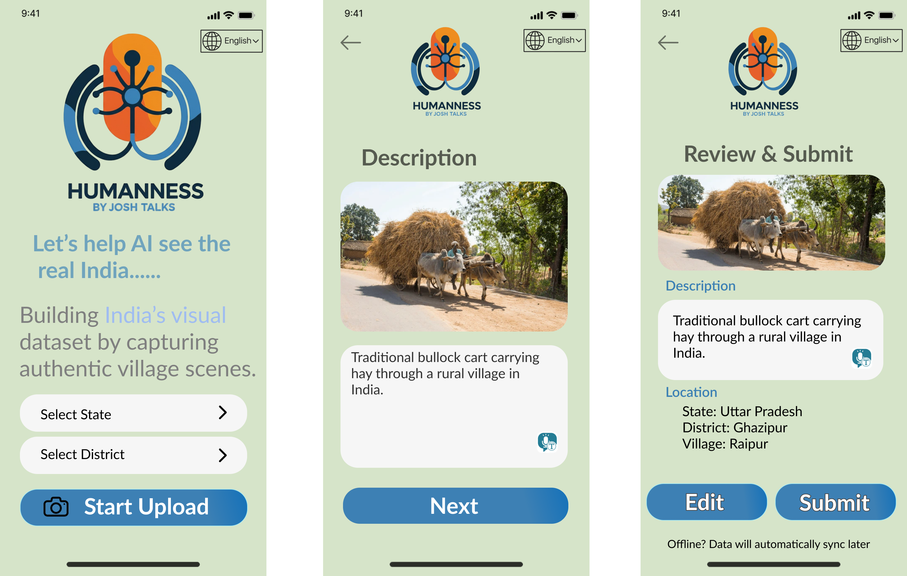
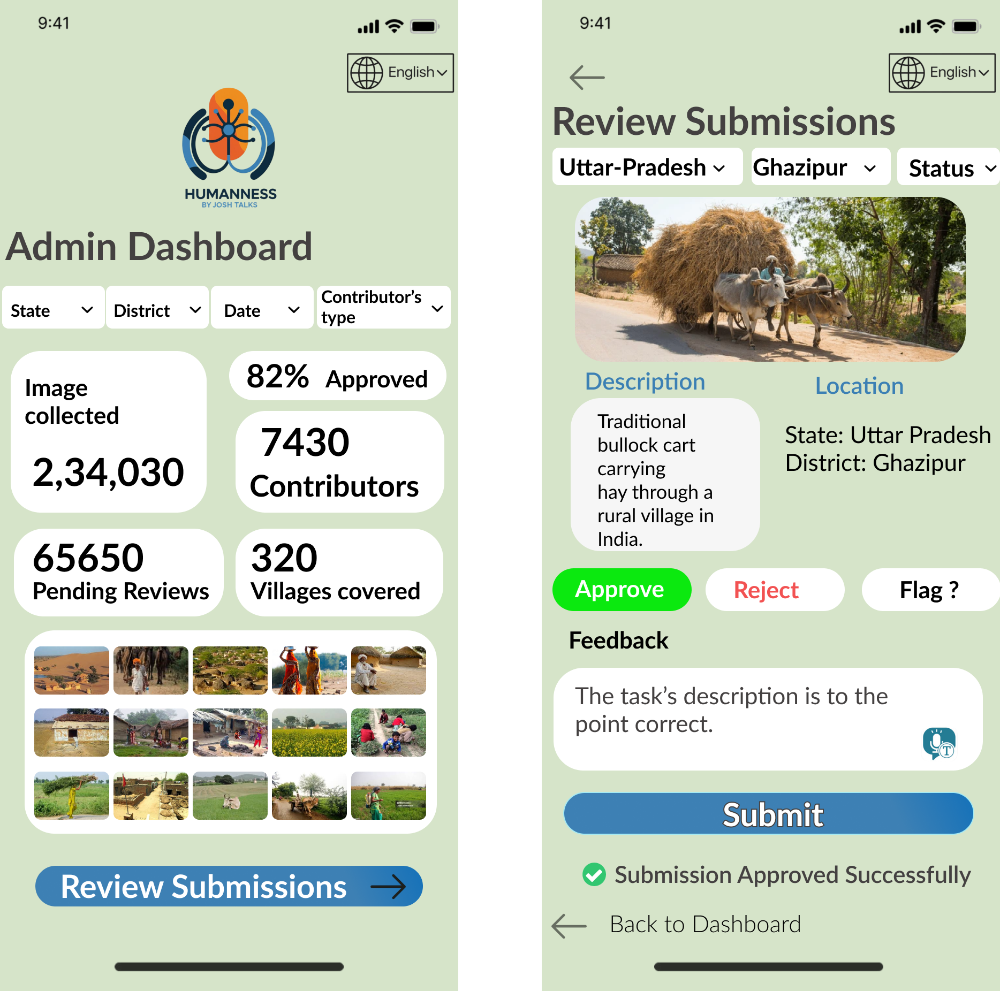

Designing a mobile-first crowdsourced visual database to train culturally inclusive Computer Vision models, alongside an automated behavior-based quality detection system.
Current AI vision models struggle to identify culturally specific Indian scenes, such as Durga Puja pandals, village hand pumps, bullock carts, and rural schools. Because these models are trained primarily on Western datasets, they fail to serve the 1.4 billion people of India effectively.
This take-home product management assignment for JoshTalks AI addresses this gap through two main initiatives:
The "Humanness Platform" bridges the gap between raw AI model capacity and real-world applicability by collecting authentic data directly from local environments.
"AI knows the Eiffel Tower perfectly, but doesn't recognize a village hand pump or local festival."
Local volunteers, NGO field workers, and community leaders who want to see their environment represented and earn rewards for authentic visual contributions.
Internal operations teams who need to evaluate dataset submissions, verify location coordinates, flag duplicate uploads, and ensure overall dataset hygiene.
Rural areas suffer from unstable network connections, making direct image uploads unreliable.
Solution: Offline-first architecture. Submissions are stored locally in IndexedDB and queued for background synchronization once a stable connection is detected.
Target users typically use basic Android smartphones with limited RAM (1-2GB) and storage constraints.
Solution: Built as a lightweight Progressive Web App (PWA) rather than a native app, utilizing aggressive client-side image compression before syncing.
Many potential contributors speak regional Indian languages and find typing detailed descriptions difficult.
Solution: Voice-to-text inputs in 10+ major Indian languages, making input intuitive and accessible.
Simplifying the upload pipeline is critical to reducing dropout rates. Below is the simplified user journey mapped out for low-literacy contributors:
The interface design prioritizes large touch targets, highly visible voice buttons, and distinct offline statuses to build user trust.
Homepage Dashboard → Voice-Enabled Upload Screen → Final Review Screen

District-wise Progress Map → ML-Flagged Submissions → Moderation Console

In crowdsourcing models, some users inevitably submit low-effort or automated work to speed up payouts. Based on sample transcription datasets, the following four low-quality patterns were defined for automated detection:
| Behavioral Pattern | Detection Logic | Action Trigger |
|---|---|---|
| Incomplete Listening | time_taken < (0.5 × duration) AND text < 4 words |
Fails to listen to audio before submission |
| Copy-Paste / AI Generated | chars_per_sec > 15 OR identical to Whisper baseline |
Automatic text entry without manual editing |
| False Blank Submissions | text == "blank" (or empty) AND duration > 2 seconds |
User skips listening to avoid transcribing |
| Idle Engagement | chars_per_sec < 0.5 AND time_taken > (2 × duration) |
User opens task and leaves it active without working |
Instead of banning users immediately after a single flag, the platform computes a rolling Quality Score over their last 20 submissions:
Score Tiers:
We track OKRs across both regional coverage and review operations efficiency:
| Key Metric | Target Threshold | Strategic Value |
|---|---|---|
| Verified Images per District | ≥ 1,000 images | Ensures visual diversity across different contexts |
| Village Representation | ≥ 90% (540K+ villages) | Ensures dataset isn't biased towards semi-urban zones |
| Average Moderation Turnaround | < 48 hours | Creates a fast feedback and payment loop for users |
| User Rejection Rate | < 15% | Ensures clear onboarding and low user frustration |
Assuming standard 4G connectivity is a common pitfall. Designing offline-first models proved that thinking through technical limitations early creates highly resilient systems.
Introducing native voice translation elements makes the platform accessible to a wider pool of contributors, ensuring a more diverse dataset.